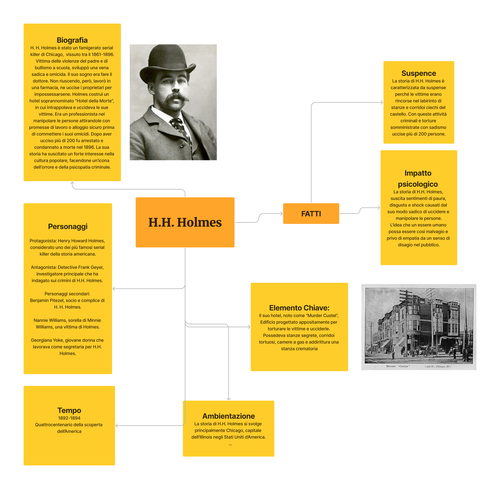
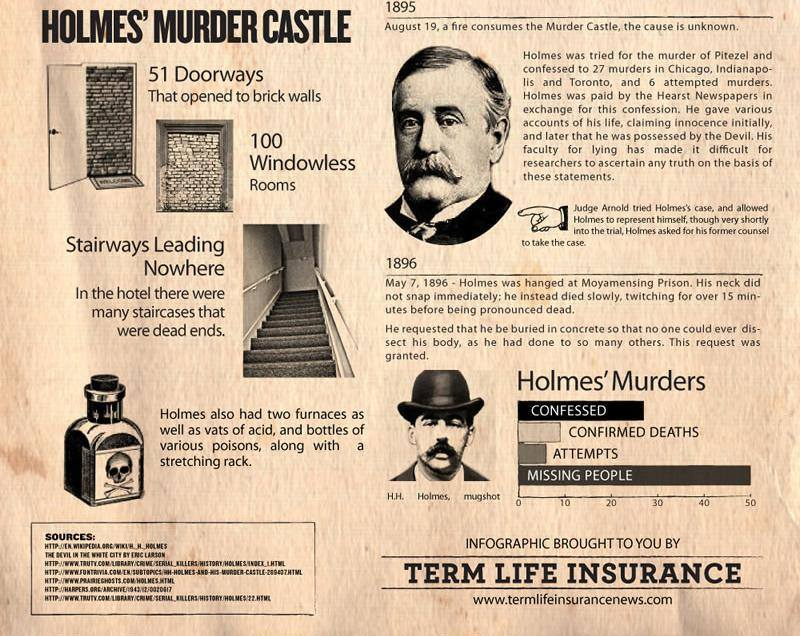
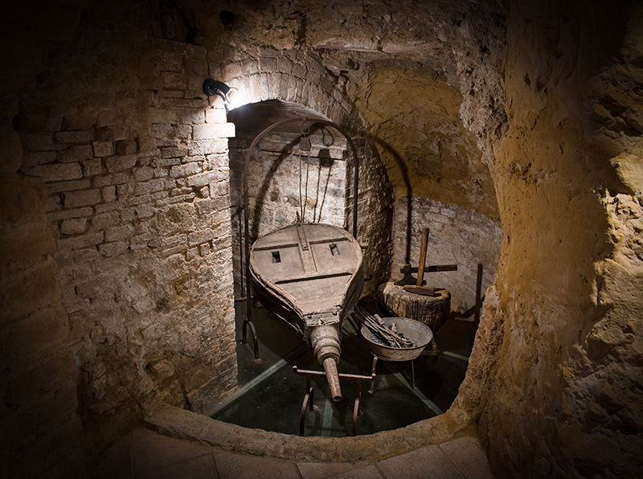
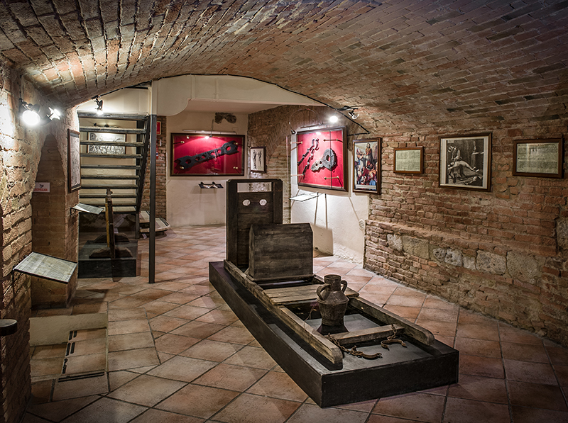
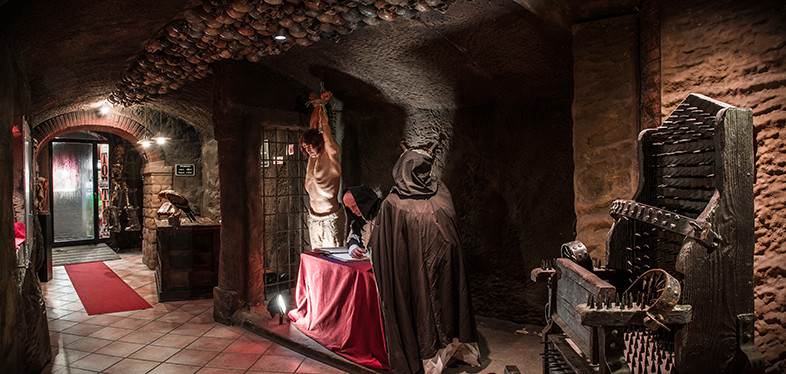
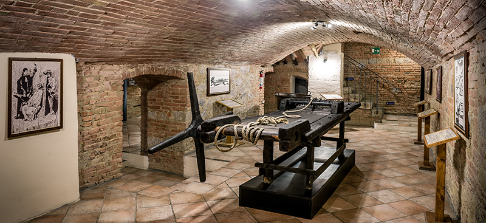
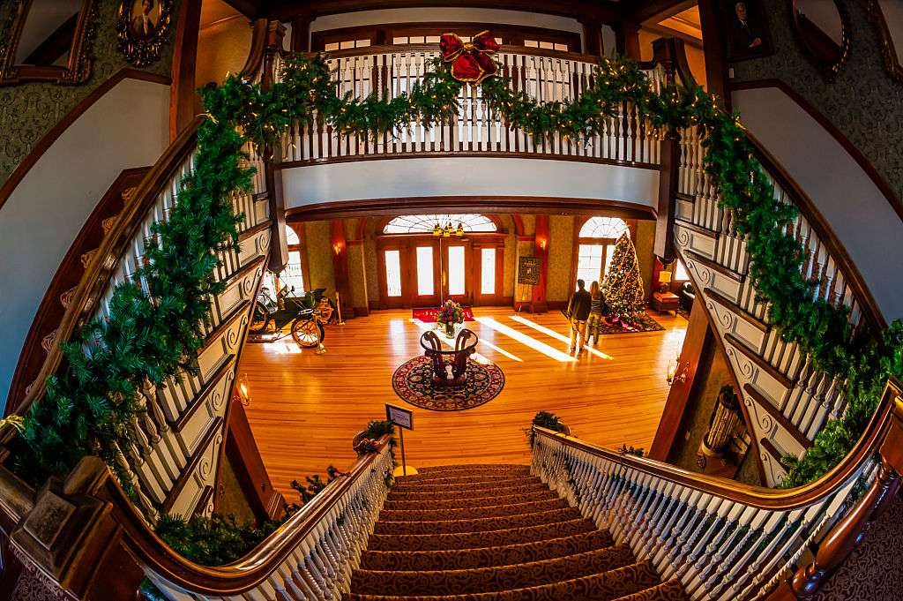
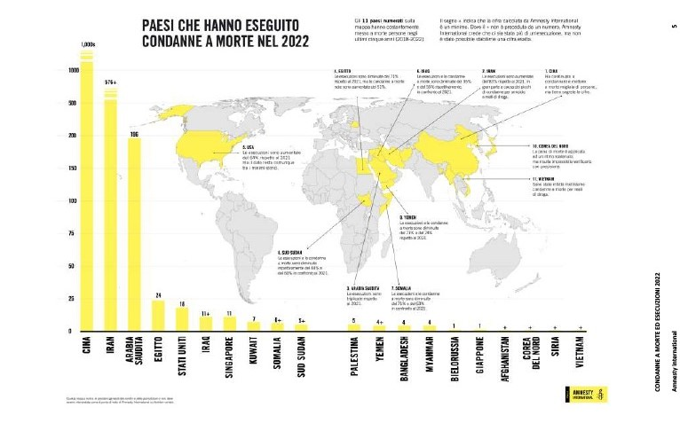

Cos'è un acido?
In chimica, un acido è una molecola o ione in grado di donare uno ione idrogeno H⁺ (acido di Brønsted-Lowry), o in grado di formare un legame covalente con una coppia di elettroni (acido di Lewis). In generale, gli acidi sono composti chimici in grado di neutralizzare una base.
Nell'accezione comune, il termine "acido" identifica sostanze generalmente irritanti e corrosive, capaci di intaccare i metalli e il marmo e di far virare al rosso una cartina al tornasole. Esempi di sostanze acide sono l'aceto, l'acido muriatico e il succo di limone. Gli acidi sono generalmente divisi in acidi forti e acidi deboli; un indice della loro forza è il pH.
Cos'è un acido organico?
Gli acidi organici sono composti organici con proprietà acide che contengono un atomo di carbonio nella loro struttura; hanno un pH inferiore a 7.
Cos'è un acido inorganico?
Gli acidi inorganici sono composti inorganici aventi proprietà acide che possono donare H⁺ ioni alla soluzione acquosa o accettare coppie di elettroni da composti ricchi di elettroni. Vengono anche chiamati acidi minerali; a differenza di quelli organici non hanno l'atomo di carbonio nella propria struttura.
Com'è formato l'acido cloridrico?
L'acido cloridrico è formato da una molecola composta da un atomo di cloro e un atomo di idrogeno (HCl). È un acido minerale forte, monoprotico, ed è il principale costituente del succo gastrico, oltre a essere un reagente comunemente usato nell'industria. In soluzione acquosa è un liquido fortemente corrosivo. Si presenta gassoso a temperatura ambiente, incolore, dall'odore e dall'azione irritante.
Cosa fa?
L'acido cloridrico, oltre a essere corrosivo se concentrato, è molto solubile in acqua con reazione esotermica; in forma concentrata può causare gravi ustioni per contatto con la pelle. A elevate concentrazioni forma dei vapori acidi che hanno effetti di corrosione notevole sui tessuti e possono danneggiare l'apparato respiratorio, gli occhi, la pelle e l'apparato digerente.
Esistono centinaia di musei medievali delle torture e castelli dell'orrore nel Mondo che offrono ai visitatori la possibilità di esplorare una collezione di strumenti del passato utilizzati per infliggere punizioni crudeli o di visitare le stanze degli orrori nei castelli.




Lo Stanley Hotel:
Per molti questo nome potrà non dire nulla ma, per gli appassionati dell'horror, questo hotel è un cult imperdibile in quanto ispirazione di uno dei film memorabili del genere: Shining di Stephen King. 140 stanze in stile neo-georgiano che si affacciano nel Rocky Mountain National Park ospitarono, nell'ultima notte prima della chiusura invernale, i coniugi King nella stanza 217.
Lo Stanley, oggi, ha due tour d'eccezione: lo Spirited Tour notturno dove si potranno ascoltare i racconti degli spiriti del luogo, e lo Shining Tour dove è possibile visitare la camera 217 e scattare foto con gli arredi del film, tra cui l'ascia con cui Jack Torrance tentò di aprire la porta del bagno. Una curiosità: il proprietario fece cambiare il numero della camera nel film da 217 a 237 per paura dell'effetto negativo sui clienti.

Mentre le vittime di H.H. Holmes cercavano di scappare tra i corridoi del labirinto segreto di camere in cui erano imprigionati, prese dalla paura, dall'ansia e dall'adrenalina, i loro polmoni lavoravano molto intensamente per dare ossigeno al corpo.
In questi casi, la respirazione diventa più rapida e profonda perché il cuore, per poter pompare sangue e ossigeno ai muscoli, aumenta la sua frequenza. Allo stesso tempo, il corpo produce adrenalina — un ormone e neurotrasmettitore che ha la funzione di aumentare la reattività, la forza e la vivacità per aiutare l'organismo a rispondere tempestivamente alla minaccia.
Questo portava le vittime in situazioni di forte ansia che compromettevano la respirazione, rendendola affannosa e quasi soffocante.
Come accennato, un altro organo fortemente compromesso dallo stress è il cuore: l'adrenalina aumenta la frequenza cardiaca e la forza delle contrazioni. Ciò aiuta a pompare più sangue verso i muscoli e il cervello perché quest'ultimo possa trovare una soluzione più in fretta.
Lo stato di ansia può però diventare così forte da paralizzare l'individuo creando uno stress che, aumentando l'adrenalina, può agire sul sistema nervoso creando uno shock e lo svenimento — un tentativo di fuga estremo del corpo e della psiche. Oppure può agire sul cuore o sui vasi sanguigni attraverso la pressione e creare infarti, ictus e morte.

Spero che questo viaggio tra storia, scienza e horror vi sia piaciuto e vi abbia fatto riflettere su quanto la realtà possa essere più spaventosa di qualsiasi racconto horror di finzione.
Tesina presentata da
KEVIN NATHAN DESTRO
L'HORROR NEL REALE · H.H. HOLMES · TESINA TERZA MEDIA 2022/2023